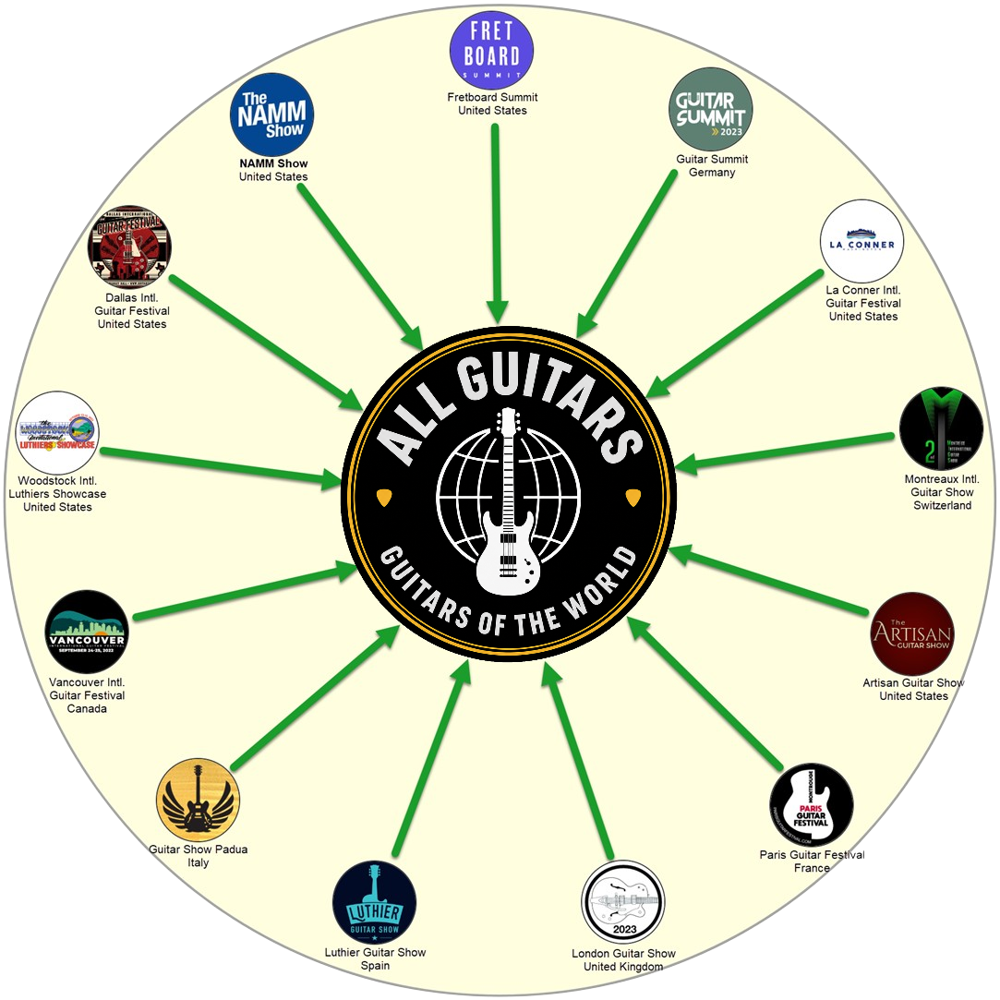
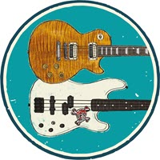
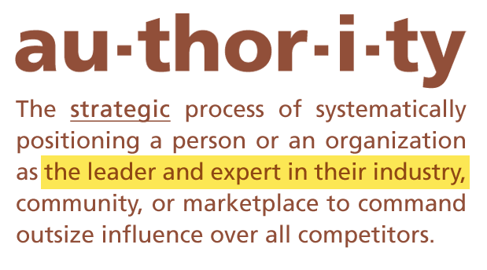
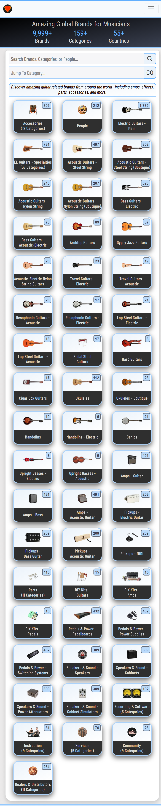
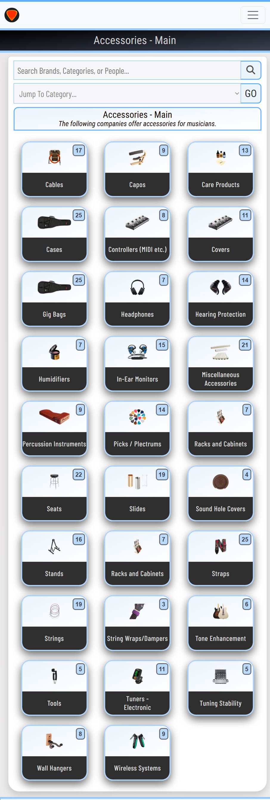
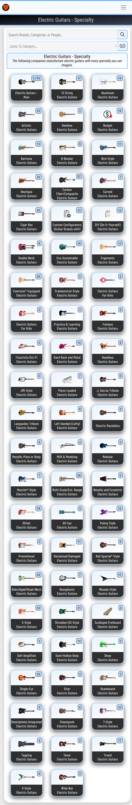
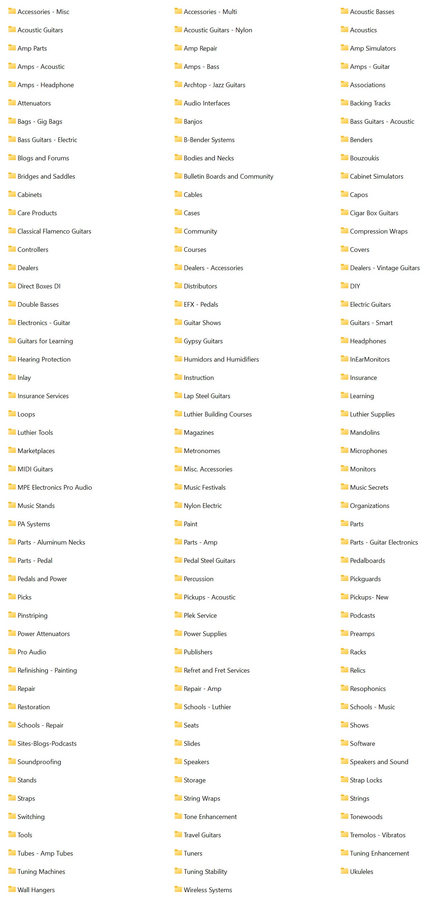

All Guitars can provide the connective tissue to unify and energize a massive and highly-fragmented market.
— Dan Raymond
Transforming the MI Industry
All Guitars is an online, industry-specific directory of global guitar-related brands.
All Guitars can transform the way the guitar industry operates by providing a centralized platform for brands, dealers, distributors, and musicians to connect and collaborate.
All Guitars provides:
- Unification: A comprehensive, highly specific, and carefully curated directory helps to unify a massive and highly-fragmented industry.
- Connectivity: The directory's extensive contact info, categorization, and searchability make it easy for brands, dealers, and distributors to discover each other and connect.
- Virtual Trade Show: "Always-on" features such as expanded listings, easy searchability, and fine-grained categorization offer an alternative to traditional trade shows.
While All Guitars is focused on business-to-business (B2B) scenarios, it's also open to musicians whose ratings, reviews, and comments are crucial to the platform.
Unification
Information on guitar brands is chaotically scattered across dealers, distributors, marketplaces, trade shows, social media, print media, and the internet.
Aside from major brands, no one really knows which companies constitute this global multi-billion-dollar industry, how they're categorized, and where they're located.
All Guitars solves this problem by compiling a "single source of truth" which aggregates, centralizes, and categorizes information on thousands of companies in the guitar industry.
Connectivity
As an authoritative industry directory, All Guitars makes it easy for musical instrument companies, vendors, prospective buyers, and other stakeholders to connect and interact.
Members of these groups can easily make connections:
- Manufacturers and Service Providers
- Dealers
- Distributors
- Musicians
- Media Personnel, Marketers, and Influencers
Virtual Trade Show
Guitar brands have traditionally relied on conventional trade shows for product exhibits, purchase orders, educational events, demo performances, and in-person networking.
However, conventional trade shows have recently become increasingly expensive, inconvenient, and less effective.
All Guitars delivers many benefits of conventional trade shows but at lower cost, increased convenience, and higher availability.
All Guitars aims to integrate and stimulate the guitar and music community with a rich variety of content and services.
— Dan Raymond
FAQ
What is All Guitars?
All Guitars is an online directory of global guitar-related brands.
What is All Guitars' mission?
All Guitars' mission is to help global guitar-related brands become:
- Better known
- Easier to find
- More credible and established
- More interconnected
- More profitable
Why is All Guitars needed?
All Guitars is needed to provide a comprehensive industry directory—a "single source of truth"—when it comes to global guitar brand information.
All Guitars brings order to chaos.
What categories are included?
All Guitars includes brands from many categories, including:
- Electric and acoustic guitars, steel guitars, mandolins, ukuleles, amplifiers, cabinets, pickups, parts, pedalboards, effects pedals, and software.
- Accessories including bags, cases, picks, slides, strings, straps, stands, capos, cables, and care products.
- Services such as dealers, distributors, instructors, luthiers, bloggers, and podcasters.
What is All Guitars' target audience?
All Guitars' target audience includes anyone who is involved with the guitar industry, including:
- Brands (Manufacturers and Service Providers)
- Dealers
- Distributors
- Musicians
- Educators
- Marketers
- Influencers
How big is the guitar industry?
The global guitar market has recently been valued at around $10-20 billion annually.
Approximately 10% of the world's population plays or has played guitar or a similar stringed instrument.
Market research firms offer insights into the guitar industry's growth and trends:
Some projections target $20-30 billion by the early 2030s.
Who's in the guitar brand ecosystem?
The vast guitar ecosystem includes:
- Manufacturers and Service Providers: Brands, Luthiers, Artisans
- Vendors: Dealers, Distributors, Marketplaces
- End-Users: Musicians, Parents, Educators
- Media Personnel: Writers, Publicists, Influencers, Forum Moderators
- Educators: Online Instructors, Music Schools, In-Person Teachers
- Promotion: Trade Shows, Events, Sponsorships, Marketers
What's a S.W.O.T. analysis for All Guitars?
-
💪
Strengths:
- Required skills, experience, and expertise are available
- Burning desire to make an impact and innovate is present
- Know-how for connecting and promoting industry stakeholders
-
💊
Weaknesses:
- A complete industry directory is difficult to build
- Innovation means navigating unchartered territory
- There is a current lack of funding and sponsorships
-
💰
Opportunities:
- Ability to unite a highly fragmented industry
- Chance to help thousands of businesses
- Innovation is overdue for the industry
-
⚔️
Threats:
- High inflation threatens health of music industry
- Underfunding of music education
- Chaotic geopolitics and global trade policies
Why is the guitar so popular?
The guitar remains popular because it is:
- Versatile: The guitar is adaptable to a huge number of styles, including rock, blues, country, pop, jazz, classical, and regional, ethnic, or folk idioms.
- Portable: Acoustic and electric guitars are generally portable and easy to transport and set up.
- Affordable: Many budget instruments are available, so cost is usually not an obstacle to ownership.
- Learnable: Guitar instruction is affordable and widely available in multiple formats, including one-on-one instruction, videos, software, and schools.
What is All Guitars' business model?
All Guitars is software-as-a-service (SaaS) with a "freemium" business model.
"Freemium" means that some features, such as basic directory listings, are free.
Premium features, such as expanded directory listings, are available through an opt-in paid subscription model.
Other paid features can be created by partnering with brands and fulfilling their needs.
What is a sponsored listing and what are its benefits?
A sponsored listing is a listing that contains expanded features, including:
- Priority placement in search results
- Expanded contact information
- Expanded number of categories
- Galleries (Video, Photo, Products)
- Products listings for commission-free sale
- Ability to chat with other users within the platform
- Owner bios
How many customers can All Guitars serve?
All Guitars can serve a virtually unlimited number of customers.
This is due to massive market size, steady growth, and continual churn.
"Churn" refers to the organic process of new companies entering the market and other companies leaving.
Is All Guitars a musical instrument marketplace?
No, All Guitars is not a musical instrument marketplace such as Reverb.com, Gear Exchange, or GBase.
All Guitars focuses on brands rather than products.
However, All Guitars can generate sales indirectly by allowing sponsors to list their products for sale.
All Guitars can also develop affiliate relationships with brands, leading to indirect product sales.
All Guitars illuminates the unique qualities, strengths, and people behind the brands.
Does All Guitars list legacy brands?
No. All Guitars lists only active brands.
Inactive brands are promptly removed.
Sites such as Guitar-List and Jedistar cover legacy brands.
What other businesses are similar to All Guitars?
Here are some other businesses which are similar to All Guitars:
How do industry directories benefit brands?
Industry directories such as All Guitars provide several benefits to brands, including:
- Targeted Audience: Connects brands directly with potential customers who are actively searching for specific products or services, unlike broad platforms. This results in qualified leads.
- Enhanced SEO and Authority: High-quality, industry-specific directories offer strong backlinks, signaling trust to search engines, improving overall online ranking and visibility for listed brands.
- Increased Credibility: Listing alongside other reputable guitar-related brands builds immediate trust and establishes brands as legitimate and professional.
- Higher Conversion Rates: Specialized features (like guitar galleries, social media links, and luthier business hours) cater to industry needs, turning prospects into customers more effectively.
- Time and Cost Efficiency: Saves marketing time and resources by avoiding broad, inefficient advertising and leveraging a platform specifically built for guitar.
What are some guitar trade shows?
Here are some well-known guitar trade shows:
- Amigo Guitar Shows - U.S.A.
- Artisan Guitar Show - U.S.A.
- Dallas International Guitar Festival - U.S.A.
- Fretboard Summit - U.S.A.
- The Guitar Show - Italy
- The Guitar Show - UK
- Guitar Summit - Germany
- Montreaux International Guitar Show - Switzerland
- NAMM Show - U.S.A.
- Northern Guitar Shows - UK
- Paris Guitar Festival - France
- Salon International de la Guitare - France
- SHG Music Show - Italy
- Wood Wire Volts - U.S.A.
These are just a few—there are many more.
What is a virtual trade show?
A virtual trade show allows dealers, distributors, consumers, and stakeholders to:
- Search brands according to category
- Discover newly released products
- Learn about the news, specialties, and people behind the brands
- Explore user reviews about brands
- Connect with other industry personnel through email, text, or chat
- Survey peer competitors within a category
- View a directory of listings on mobile devices 24/7
A virtual trade show offers some of the same benefits to brands as physical trade shows, but at reduced cost, improved convenience, and higher availability.
How can All Guitars succeed?
All Guitars can succeed by partnering with customers and working with them to develop features that help them succeed in their business.
All Guitars's keys to success include:
- Customer satisfaction
- Relationship building
- Continuous improvement
Who is the founder of All Guitars?
All Guitars' founder is Dan Raymond, a guitarist and software developer.
All Guitars is the solution to his problem: why is there no "single source of truth" for global guitar brands?
Dan was also inspired by David Kalt's quote: "The market for musical instruments is massive and fragmented."
Dan has worked on teams that delivered software solutions for IBM, Wells Fargo, Comcast, and many other companies large and small. He holds a B.S. in Management Information Systems from UNLV.
What are some key strategies for All Guitars?
Some key strategies for All Guitars include:
- Create Value - Industry unification and affordable promotions
- Establish Authority - Become known as a trustworth guitar directory
- Drive Traffic - Freemium model fuels growth and attention
- Serve Customers - Support and spotlight brands
- Generate Systems - Easy listing management for customers
- Leverage Strengths - Unique dataset - Mobile-first - Global reach
What are the 5 C's of All Guitars?
- Community - All Guitars fosters community by acting as a central hub that connects similar businesses, building solidarity, establishing credibility, and facilitating collaboration.
- Connectivity - Increases industry connectivity by providing a centralized, searchable platform that enhances digital visibility, builds trust, and facilitates B2B networking.
- Convenience - Creates convenience for stakeholders by consolidating essential information into a single, searchable platform, allowing for quick comparisons and immediate contact.
- Cost-Effectiveness - Serves as a highly cost-effective promotion tool providing brands with significant visibility and lead generation opportunities for minimal financial investment.
- Coverage - Provides multinational coverage via a centralized, searchable digital footprint, allowing brands to be found in multiple countries, regions, and from niche categories.
All Guitars is a community for discovering and exploring guitar-related brands from around the world.
— Dan Raymond

All Guitars aggregates data from many sources, including leading guitar shows from around the world.
List of Global Guitar Shows
Here is a partial list of important global guitar shows.









